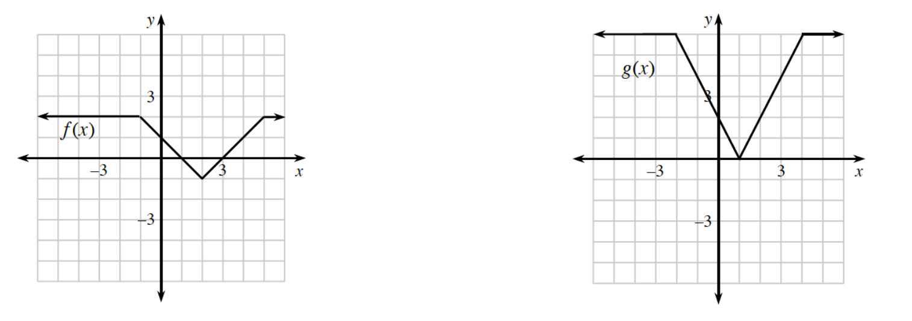

Consider the discrete random variable \(X\) with the following distribution.
| \(X\) | \(5\) | \(6\) | \(8\) | \(12\) |
| \(P(X)\) | \(0.2\) | \(0.1\) | \(0.3\) | \(0.4\) |
Explain why this is a valid probability model.
Create a relative frequency histogram for this probability distribution.
Calculate the expected value of \(X\).
Identify each quantity below as either a discrete random variable or a continuous variable.
shoe size
foot length
cat’s weight
sheep in a flock
outcome of a coin flip
speed of a car
Three coins are flipped. Let \(X=\text{the number of heads}\).
List all of the possible heads/tails combinations of outcomes.
Create a probability model for this situation.
Calculate the expected value of \(X\).
Jamal hits \(80\%\) of his free throws in basketball. If he shoots four free throws, what is the probability that he hits only one of the four?
Let \(z_{1}=1-i\) and \(z_2=-1+(\sqrt{3})i\).
What is the distance between \(z_{1}\) and \(z_{2}\)?
What is the midpoint of \(z_{1}\) and \(z_{2}\)?
What are the modulus and argument of \(z_{2}\)?
Evaluate \((z_2)^5\).
Use graph. \(y=g(x)\) is a transformation of \(y=f(x)\). Write an equation for \(g(x)\) in terms of \(f(x)\).

Suppose Benny starts at \((10,3)\) and is crawling along the curve \(y=f(x)\) as \(x\to5^{+}\). At the same time, Bertha begins at \((0,7)\) and is also crawling along the curve \(y=f(x)\) as \(x\to5^{-}\). If Benny and Bertha are in contact by cell phone, how will they know if \(\lim\limits_{x\to5} f(x)\) exists?
This problem is a checkpoint for working with parametrically-defined functions.
Use graph. \(x(t)=t^2+3,\ y(t)=2t-1\text{ for }-3\le t\le3\).
Rewrite the parametrically-defined function in part (a) in rectangular form.
Check your answers by referring to the selected answers.
Ideally at this point you are comfortable working with these types of problems and can complete them correctly. If you feel that you need more confidence when completing these types of problems, then review the Parametrically-Defined Functions Checkpoint materials available at cpm.org and try the practice problems provided. From this point on, you will be expected to do problems like these correctly and with confidence.